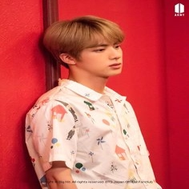
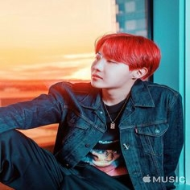
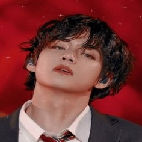

ʕ•́ᴥ•̀ʔっ Miembros de Bangtan Sonyeondan (방탄소년단) ʕ•́ᴥ•̀ʔっ
Kim Nam-joon (en hangul, 김남준; en hanja, 金南俊; Ilsan-gu, Goyang; 12 de septiembre de 1994), y más conocido por su nombre artístico RM , es un rapero, bailarín, compositor, productor y modelo surcoreano. Desde 2013, es el líder y rapero principal de la banda BTS. En 2015, lanzó su primer mixtape en solitario, llamado RM. RM es conocido por su gran participación en las letras, producción y composición en las canciones de BTS. Tiene más de 100 canciones acreditadas a su nombre por la Korea Music Copyright Association (KOMCA).
RM nació el 12 de septiembre de 1994 en Ilsan-gu, Corea del Sur, y tiene una hermana menor. Antes de su debut, era un rapero underground el cual usaba el nombre artístico "Runch Randa"; lanzó varias canciones y colaboró con el conocido rapero Zico.2 Era parte de el grupo surcoreano de hip hop underground Daenamhyup, el cuál consiste de Marvel J, l11ven, Supreme Boi, Iron, Kyum2, Kidoh, Samsoon, Illipse, DJ Snatch y él. El grupo tuvo actividad desde el 2009 hasta el 2013, cuando RM dejó su participación en el grupo para concentrarse en BTS, aunque en una llamada con Supreme Boi, dijo que algún día volvería a participar con Daenamhyup,3 aunque algunos miembros del grupo continuaron participando sin RM.

RM tiene muchos logros académicos notables. Alcanzó un 850 en el TOEIC cuando estaba en secundaria, probablemente debido por haber estudiado en Nueva Zelanda. También estuvo en el top 1.3% de la nación en los exámenes de entrada a la universidad en lengua, matemática, idiomas extranjeros y ciencias sociales; además, tiene un CI de 148. Además de su lengua materna, él habla fluidamente inglés y japonés, ya que continuó estudiando japonés luego del debut de BTS, ya que todos los miembros de Big Hit reciben clases básicas de dicho idioma. También vio múltiples veces el sitcom estadounidense Friends, para ayudarle a aprender inglés.
ʕ•́ᴥ•̀ʔっʕ•́ᴥ•̀ʔっʕ•́ᴥ•̀ʔっʕ•́ᴥ•̀ʔっʕ•́ᴥ•̀ʔっʕ•́ᴥ•̀ʔっʕ•́ᴥ•̀ʔっʕ•́ᴥ•̀ʔっʕ•́ᴥ•̀ʔっʕ•́ᴥ•̀ʔっʕ•́ᴥ•̀ʔっʕ•́ᴥ•̀ʔっʕ•́ᴥ•̀ʔっʕ•́ᴥ•̀ʔっʕ•́ᴥ•̀ʔっʕ•́ᴥ•̀ʔっʕ•́ᴥ•̀ʔっʕ•́ᴥ•̀ʔっʕ•́ᴥ•̀ʔっʕ•́ᴥ•̀ʔっʕ•́ᴥ•̀ʔっʕ•́ᴥ•̀ʔっʕ•́ᴥ•̀ʔっʕ•́ᴥ•̀ʔ
Kim Seok-jin (en hangul, 김석진; Anyang-Gwangcheon, 4 de diciembre de 1992), mejor conocido bajo su nombre artístico de Jin, es un cantante, modelo, compositor y bailarín surcoreano. Pertenece al grupo BTS, donde ocupa el puesto de vocalista, bailarín y visual, desde 2013.
Jin nació el 4 de diciembre de 1992 en Anyang-Gwangcheon, Corea del Sur. Su familia consiste en su madre, su padre y su hermano mayor. Asistió a la Universidad Konkuk y se graduó con un título en arte y actuación el 22 de febrero de 2017. Actualmente está inscrito en la escuela de posgrado de la Hanyang Cyber University para realzar estudios en otras áreas además de la música.
Fue descubierto por su atractivo físico mientras caminaba por la calle, a partir de ello fue invitado a realizar una audición para Big Hit Entertainment. El 13 de junio de 2013, Jin debutó como miembro de BTS en M! Countdown con el sencillo «No More Dream» de su primer álbum debut, 2 Cool 4 Skool. Aunque nunca había compuesto antes, participó en la producción de su solo «Awake», del álbum Wings; la canción alcanzó el puesto 31 de la Gaon Music Chart y el número 6 en la lista Billboard World Digital Singles. En diciembre de 2016 publicó una versión navideña de «Awake» en SoundCloud. El 9 de agosto de 2018 se lanzó un tráiler del nuevo álbum de BTS con una canción llamada «Epiphany». Fue descrita como una «melodía pop-rock» por Billboard; la canción es un solo de Jin con letras que tratan conceptos sobre la aceptación y el amor propio. La versión completa del tema fue publicada por primera vez en el álbum Love Yourself: Answer. Esta alcanzó el número 30 en la la lista Gaon Music Chart y la posición 4 en la Billboard World Digital Singles.14 En octubre recibió la Orden al Mérito Cultural, específicamente la quinta clase (Hwagwan), por parte del Presidente de Corea del Sur, junto a los demás miembros del grupo
El 9 de agosto de 2018 se lanzó un tráiler del nuevo álbum de BTS con una canción llamada «Epiphany». Fue descrita como una «melodía pop-rock» por Billboard; la canción es un solo de Jin con letras que tratan conceptos sobre la aceptación y el amor propio. La versión completa del tema fue publicada por primera vez en el álbum Love Yourself: Answer. Esta alcanzó el número 30 en la la lista Gaon Music Chart y la posición 4 en la Billboard World Digital Singles.14 En octubre recibió la Orden al Mérito Cultural, específicamente la quinta clase (Hwagwan), por parte del Presidente de Corea del Sur, junto a los demás miembros del grupo
ʕ•́ᴥ•̀ʔっʕ•́ᴥ•̀ʔっʕ•́ᴥ•̀ʔっʕ•́ᴥ•̀ʔっʕ•́ᴥ•̀ʔっʕ•́ᴥ•̀ʔっʕ•́ᴥ•̀ʔっʕ•́ᴥ•̀ʔっʕ•́ᴥ•̀ʔっʕ•́ᴥ•̀ʔっʕ•́ᴥ•̀ʔっʕ•́ᴥ•̀ʔっʕ•́ᴥ•̀ʔっʕ•́ᴥ•̀ʔっʕ•́ᴥ•̀ʔっʕ•́ᴥ•̀ʔっʕ•́ᴥ•̀ʔっʕ•́ᴥ•̀ʔっʕ•́ᴥ•̀ʔっʕ•́ᴥ•̀ʔっʕ•́ᴥ•̀ʔっʕ•́ᴥ•̀ʔっʕ•́ᴥ•̀ʔっʕ•́ᴥ•̀ʔ
Min Yoon-gi (en hangul, 민윤기; Daegu, 9 de marzo de 1993), más conocido por sus nombres artísticos Suga y Agust D, es un rapero, compositor, productor, modelo y bailarín surcoreano. Debutó en el grupo BTS en 2013 bajo la compañía Big Hit Entertainment. En 2010, antes de debutar con BTS, formaba parte de un grupo underground de rap en su ciudad natal llamado D-Town. El 15 de agosto de 2016 publicó su primer mixtape debut en solitario titulado Agust D, del cual salieron dos vídeos musicales para los temas «Agust D» y «Give it to Me». Tiene más de 70 canciones acreditadas a su nombre por la Korea Music Copyright Association (KOMCA), entre las que se encuentra «Wine» de Suran.
Min Yoon-gi nació el 9 de marzo de 1993 en la ciudad de Daegu, al sudeste de Corea del Sur.Empezó a interesarse por la música en quinto de primaria después de ver una actuación de Stony Skunk en televisión, y fue así como empezó a escuchar a grupos hip-hop como Epik High. En segundo curso de la escuela media actuó por primera vez en un escenario interpretando el tema «Go Back» del grupo Dynamic Duo. A los trece años comenzó a aprender a utilizar la tecnología MIDI y a escribir sus propias canciones. A los diecisiete años y gracias a un mentor, entró a formar parte de un grupo de rap underground llamado D-Town. Mientras formaba parte de esta agrupación produjo la canción «518-062», que es un tema conmemorativo a la Masacre de Gwangju. En una entrevista con la revista Grazia declaró: «Cuando trabajaba en el estudio, componía canciones o hacía ritmos e incluso los vendía. Después empecé a rapear y a hacer actuaciones de forma natural. Mientras trabajaba allí era difícil pagar la comida o el transporte. (...) Pero aunque era difícil quería hacer música, así que lo soportaba». En 2010 Suga participó en las audiciones Hit It llevadas a cabo por Big Hit Entertainment. Quedó segundo en la competición que se celebró y entró a formar parte de la compañía el 7 de noviembre de 2010.
Suga es responsable de la escritura, composición, arreglo, mezcla y masterización de su música, además de producir canciones hiphop y R&B. Tiene más de 70 canciones acreditadas por parte de la Korea Music Copyright Association. Sus letras involucran temas que están «llenos de sueños y esperanza», cuyo objetivo es convertirse en «la fortaleza de muchas personas». Él cita a Stony Skunk y Epik High como sus inspiraciones para dedicarse a la música hiphop y por despertar su interés en el género, específicamente el álbum híbrido de reggae-hiphop Ragga Muffin de este último grupo ya que es «completamente diferente» de la música comercial. Jeff Benjamin, de Fuse, dijo que el mixtape de Suga muestra «el oído de la estrella para producciones de moda, un estilo de rap hardcore, y cómo convierte sus vulnerabilidades en su fuerza». Otros críticos mencionaron que «la ejecución narrativa de Suga en la música que crea derriba la barrera de la censura». En enero de 2018 fue nombrado miembro de la Korea Music Copyright Association.
ʕ•́ᴥ•̀ʔっʕ•́ᴥ•̀ʔっʕ•́ᴥ•̀ʔっʕ•́ᴥ•̀ʔっʕ•́ᴥ•̀ʔっʕ•́ᴥ•̀ʔっʕ•́ᴥ•̀ʔっʕ•́ᴥ•̀ʔっʕ•́ᴥ•̀ʔっʕ•́ᴥ•̀ʔっʕ•́ᴥ•̀ʔっʕ•́ᴥ•̀ʔっʕ•́ᴥ•̀ʔっʕ•́ᴥ•̀ʔっʕ•́ᴥ•̀ʔっʕ•́ᴥ•̀ʔっʕ•́ᴥ•̀ʔっʕ•́ᴥ•̀ʔっʕ•́ᴥ•̀ʔっʕ•́ᴥ•̀ʔっʕ•́ᴥ•̀ʔっʕ•́ᴥ•̀ʔっʕ•́ᴥ•̀ʔっʕ•́ᴥ•̀ʔ
Jung Ho-seok (en hangul, 정호석; en hanja, 鄭號錫; Gwangju, 18 de febrero de 1994), conocido por su nombre artístico J-Hope, es un rapero, coreógrafo, bailarín, MC, compositor, modelo y productor surcoreano. Desde 2013 es miembro, bailarín principal y coreógrafo del grupo BTS, en la agencia de Big Hit Entertainment, donde forma parte de la dance line, junto a Jimin, y Jungkook. Pertenece también a la rap line, al igual que sus compañeros RM y Suga. Tuvo gran participación en la composición de varios temas de la banda, llegando a tener 70 canciones acreditadas a su nombre por la Korea Music Copyright Association (KOMC).
J-Hope nació el 18 de febrero de 1994 en Gwangju, Corea del Sur,. Antes de su debut con BTS, era un bailarín underground, y se presentaba bajo el nombre de Smile Hoya, nombre con el que ganó varios premios en competencias y festivales de baile, además, perteneció a dos grupos de baile callejero, GO Arts y NEURON. Estudió en la prestigiosa Academia de Baile de Seungri, y en 2009 audicionó para JYP Entertainment, donde fue admitido y llegó a presentarse junto a NEURON, compañía que luego abandonaría. Mientras era aprendiz en Big Hit Entertainment, J-Hope apareció junto a Jungkook como bailarines en el vídeo musical de la canción «I'm da One», de Jo Kwon; este videoclip también tiene apariciones estelares de Jin y V. Poco tiempo después volvería a colaborar con Jo Kwon en la canción «Animal», estas dos canciones luego fueron recopiladas en el álbum debut de Jo Kwon, I'm da One, publicado el 25 de junio de 2012. J-Hope, junto a Suga, Jungkook y Jimin, también colaboraron como bailarines en el sencillo de la Vocaloid coreana SeeU junto a GLAM, «Glamorous».

J-Hope ha sido descrito como un artista con un tono optimista y enérgico en su música y presentaciones. Su mixtape, Hope World, recibió elogios por su naturaleza divertida y variedad de géneros musicales, incluyendo synth-pop, trap, house, alternative hip hop, funk-soul, y elementos retro. Jeff Benjamin de Fuse escribió que el estilo atmosférico de «Blue Side», la canción final del mixtape, «deja con curiosidad al oyente sobre lo que hará J-Hope después». Respecto a los elementos líricos del mixtape, la canción principal «Daydream» fue bien recibida por la crítica por abordar la discusión de las dificultades que enfrenta un artista en su carrera, además de incluir varias referencias literarias, y una presentación entretenida para un tema serio. J-Hope cita la naturaleza aventurera de Veinte mil leguas de viaje submarino de Julio Verne y los trabajos de Kyle, Aminé y Joey Badass como las principales influencias en su estilo y trabajo en Hope World. La idea de la paz también fue una de las bases para la mayoría de sus letras, indicando que «sería fantástico convertirme en una parte de la paz personal de alguien a través de mi música» en una entrevista con la revista Time. La idea de «representar a la generación moderna» también ha influenciado su trabajo en la música de BTS.
ʕ•́ᴥ•̀ʔっʕ•́ᴥ•̀ʔっʕ•́ᴥ•̀ʔっʕ•́ᴥ•̀ʔっʕ•́ᴥ•̀ʔっʕ•́ᴥ•̀ʔっʕ•́ᴥ•̀ʔっʕ•́ᴥ•̀ʔっʕ•́ᴥ•̀ʔっʕ•́ᴥ•̀ʔっʕ•́ᴥ•̀ʔっʕ•́ᴥ•̀ʔっʕ•́ᴥ•̀ʔっʕ•́ᴥ•̀ʔっʕ•́ᴥ•̀ʔっʕ•́ᴥ•̀ʔっʕ•́ᴥ•̀ʔっʕ•́ᴥ•̀ʔっʕ•́ᴥ•̀ʔっʕ•́ᴥ•̀ʔっʕ•́ᴥ•̀ʔっʕ•́ᴥ•̀ʔっʕ•́ᴥ•̀ʔっʕ•́ᴥ•̀ʔ
Park Ji-min (en hangul, 박지민; en hanja, 朴智旻; n. Busan, 13 de octubre de 1995), más conocido como Jimin (en hangul, 지민), es un cantante y bailarín surcoreano. En 2013, debutó como integrante de la boy band BTS. En 2016 Jimin se posicionó en el puesto 14 de los idols más preferidos en una encuesta realizada por Gallup Corea. Posteriormente llegó al número 7 en 2017 y al 1 en 2018.2930 En 2018 fue la novena celebridad y el octavo músico sobre los que más se tuiteó en el mundo. También fue escogido por The Guardian como el décimo séptimo mejor integrante de una boyband en la historia.
El 12 de junio de 2013, Jimin debutó como miembro de BTS con el sencillo «No More Dream» de su primer álbum debut, 2 Cool 4 Skool. El 25 de diciembre de 2014 cantó la versión coreana de la canción «Mistletoe» de Justin Bieber, junto a Jungkook, escrita por Jimin y Slow Rabbit. Para el miniálbum, The Most Beautiful Moment in Life, Part 1, publicado en abril de 2015, participó en la composición de la canción «Boyz with Fun». Posteriormente colaboró en la composición de su solo, «Lie», del álbum Wings. La canción fue descrita como dramática e impresionante, además de transmitir emociones y tonos profundos que ayudan a reflejar el concepto general del álbum. En contraste, su segundo solo, «Serendipity», del álbum de 2017 Love Yourself: Her, fue suave y sensual, revelando la alegría, convicción y curiosidad del amor. Tanto «Serendipity» como «Lie» superaron los 50 millones de streams en Spotify, por lo que fue la primera vez en 5 años que un artista coreano conseguía esta cantidad de reproducciones después de «Gentleman» de PSY. También fueron los únicos solos del grupo en la lista de Official Charts de las 20 canciones más reproducidas de BTS en el Reino Unido. El 24 de octubre de 2018 recibió la Orden al Mérito Cultural, específicamente la quinta clase (Hwagwan), por parte del Presidente de Corea del Sur junto a los demás miembros del grupo por su papel en la promoción de la cultura coreana.

En 2016 Jimin hizo varias apariciones en varios programas como Celebrity Bromance, Hello Counselor, Please Take Care of My Refrigerator y God's Workplace. El mismo año empezó a ser presentador especial de programas como Show! Music Core y M Countdown. En cambio, en el mes de diciembre realizó una actuación de baile con Lee Tae-min de SHINee en KBS Song Festival. El 30 de diciembre de 2018 Jimin publicó su primera canción en solitario, «Promise», en la página de SoundCloud de BTS. El tema fue descrito por Billboard como una «balada pop apacible»; fue compuesto por Jimin y Slow Rabbit.23 «Promise» incluye letras escritas por Jimin y su compañero de BTS, RM, mientras que la fotografía de la portada fue tomada por otro de sus miembros de grupo, V. Tras su lanzamiento rompió el récord de la canción más reproducida en Soundcloud en 24 horas
ʕ•́ᴥ•̀ʔっʕ•́ᴥ•̀ʔっʕ•́ᴥ•̀ʔっʕ•́ᴥ•̀ʔっʕ•́ᴥ•̀ʔっʕ•́ᴥ•̀ʔっʕ•́ᴥ•̀ʔっʕ•́ᴥ•̀ʔっʕ•́ᴥ•̀ʔっʕ•́ᴥ•̀ʔっʕ•́ᴥ•̀ʔっʕ•́ᴥ•̀ʔっʕ•́ᴥ•̀ʔっʕ•́ᴥ•̀ʔっʕ•́ᴥ•̀ʔっʕ•́ᴥ•̀ʔっʕ•́ᴥ•̀ʔっʕ•́ᴥ•̀ʔっʕ•́ᴥ•̀ʔっʕ•́ᴥ•̀ʔっʕ•́ᴥ•̀ʔっʕ•́ᴥ•̀ʔっʕ•́ᴥ•̀ʔっʕ•́ᴥ•̀ʔ
Kim Tae-hyung (en hangul, 김태형; en hanja, 金泰亨; Seo-gu, 30 de diciembre de 1995), más conocido por su nombre artístico V, es un cantante, modelo, actor, bailarín y compositor surcoreano. Es miembro del grupo BTS, bajo la compañía Big Hit Entertainment. V nació como Kim Tae-hyung el 30 de diciembre de 1995 en Seo-gu, Daegu, Corea del Sur, y creció en Geochang-gun. Es el mayor de tres hijos; tiene una hermana y un hermano menor. Comenzó a aspirar a ser un cantante profesional en la escuela primaria, por lo que para seguir esta carrera empezó a tomar clases de saxofón. Se convirtió en un trainee de Big Hit Entertainment después de pasar una audición en Daegu en 2011. Después de graduarse de la Korean Arts High School en 2014, V se inscribió en la Global Cyber University.
El 13 de junio de 2013, V debutó como miembro de BTS en M! Countdown con el sencillo «No More Dream» de su primer álbum debut, 2 Cool 4 Skool. Fue acreditado por primera vez por sus composiciones en The Most Beautiful Moment in Life, Part 1 por colaborar en la escritura y producción de la canción «Hold Me Tight». También contribuyó en la letra de la canción «Fun Boyz» y con la melodía para el tema «Run», del álbum The Most Beautiful Moment in Life, Part 2. Posteriormente hizo lo mismo con su solo «Stigma», del álbum Wings, que se posicionó en el número 26 de la Gaon Music Chart y en el puesto 10 de la lista Billboard World Digital Singles.

En mayo de 2018 se publicó su segundo solo, «Singularity», como parte del tráiler para promocionar su tercer álbum de estudio Love Yourself: Tear. Un mes después de su publicación, The Guardian añadió la canción a su lista de reproducción «Top 50 de canciones para el mes de junio de 2018». Billboard incluyó el tema en el puesto 28 en su lista de críticos musicales «Top 50 de canciones de BTS». En general, «Singularity» fue bien recibida por los críticos. The New York Times la colocó en el número 20 de su lista «Las 65 mejores canciones de 2018», junto con «Fake Love». El crítico de música pop de Los Angeles Times, Mikael Wood, la nombró la cuarta «mejor canción de 2018». Además, Laura Snapes de The Guardian la incluyó como una de sus pistas favoritas en su lista «La mejor música de 2018: Álbumes y canciones». El 24 de octubre, V se convirtió en uno de los receptores más jóvenes de la Orden al Mérito Cultural, específicamente la quinta clase (Hwagwan), que recibió por parte del Presidente de Corea del Sur junto a los demás miembros del grupo por su papel en la promoción de la cultura coreana.
ʕ•́ᴥ•̀ʔっʕ•́ᴥ•̀ʔっʕ•́ᴥ•̀ʔっʕ•́ᴥ•̀ʔっʕ•́ᴥ•̀ʔっʕ•́ᴥ•̀ʔっʕ•́ᴥ•̀ʔっʕ•́ᴥ•̀ʔっʕ•́ᴥ•̀ʔっʕ•́ᴥ•̀ʔっʕ•́ᴥ•̀ʔっʕ•́ᴥ•̀ʔっʕ•́ᴥ•̀ʔっʕ•́ᴥ•̀ʔっʕ•́ᴥ•̀ʔっʕ•́ᴥ•̀ʔっʕ•́ᴥ•̀ʔっʕ•́ᴥ•̀ʔっʕ•́ᴥ•̀ʔっʕ•́ᴥ•̀ʔっʕ•́ᴥ•̀ʔっʕ•́ᴥ•̀ʔっʕ•́ᴥ•̀ʔっʕ•́ᴥ•̀ʔ

Jeon Jung-kook (en hangul, 전정국; en hanja, 田柾國; Mandeok-Dong, Busan; 1 de septiembre de 1997), conocido como Jungkook, es un cantante, bailarín, rapero, compositor, productor y modelo surcoreano. Desde 2013, es miembro, vocalista principal y maknae de la banda BTS, en la agencia de Big Hit Entertainment, donde forma parte de la dance line, junto a J-Hope y Jimin. A diferencia de otros miembros de la banda como RM, Suga o J-Hope, Jungkook no tiene una participación tan grande en las canciones de BTS, aun así tiene 5 canciones acreditadas a su nombre por la Korea Music Copyright Association (KOMCA).
Jungkook debutó como integrante de BTS el 12 de junio de 2013. Se desempeña como el vocalista principal, subrapero y bailarín principal. Como vocalista principal, Jungkook tomó la delantera en gran parte de la discografía de BTS desde los primeros días previos al debut, llamó la atención por su rap con los covers de «Beautiful» de Mariah Carey y «Graduation Song», «Wild and Free» de Snoop Dogg, Wiz Khalifa y Bruno Mars, ganando una instantánea atención de los fanáticos de todo el mundo. Jungkook en una firma de autógrafos, el 28 de julio de 2013. En marzo de 2015, se anunció que se lanzaría el EP de BTS, The Most Beautiful Moment in Life Pt.1. Se dijo que por primera vez, Jungkook participó en la producción de la canción «Love is Not Over», la cual forma parte del EP, donde participó como coproductor, coescritor y estuvo a cargo de la voz, arreglo y teclado. Mientras trabajaba en el nuevo álbum del grupo, en septiembre de 2015, Jungkook participó en el proyecto One Dream One Korea, entre otros artistas importantes de Corea del Sur que se unieron para producir una canción en memoria de la Guerra de Corea. La campaña llamada One K Global se lanzó como parte de un movimiento para la reunificación coreana y para contribuir a un esfuerzo mayor para avanzar en la paz regional y la seguridad global. La canción fue lanzada e interpretada en el One K Concert en Seúl el 15 de octubre de 2015. La canción volvió a ser relevante en 2018 gracias a la Cumbre Intercoreana realizada entre el presidente de Corea del Sur Moon Jae-in y el líder supremo norcoreano Kim Jong-un. La canción fue reproducida durante la despedida entre ambos líderes. En noviembre de 2015, BTS lanzó su cuarto EP, The Most Beautiful Moment in Life Pt.2 en el que Jungkook participó en la coescritura de las canciones «Run» y «Autumn Leaves».

En diciembre de 2015, apareció en Internet un vídeo en el que aparece un gerente que presuntamente amenaza a Jungkook, causando conmoción entre los fanáticos y el público. En el vídeo se muestra que el gerente presuntamente levantó la mano amenazando con golpear a Jungkook. La gran controversia fue abordada por Big Hit el 10 de diciembre, donde la empresa y el gerente reconocieron el problema, asegurando el despido del gerente y una mayor protección para el grupo. El 24 de agosto de 2018, BTS lanzó su segundo álbum recopilatorio, Love Yourself: Answer, que incluye a «Euphoria», una canción interpretada por Jungkook, siendo la primera del álbum. «Euphoria» se ubicó en el segundo lugar de seis plataformas musicales de Corea del Sur, incluyendo Melon.